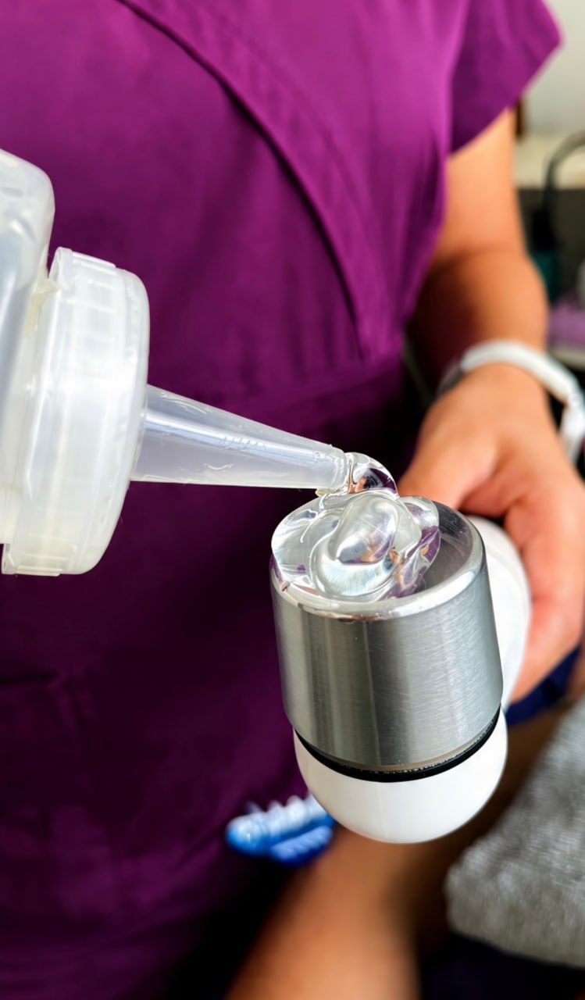
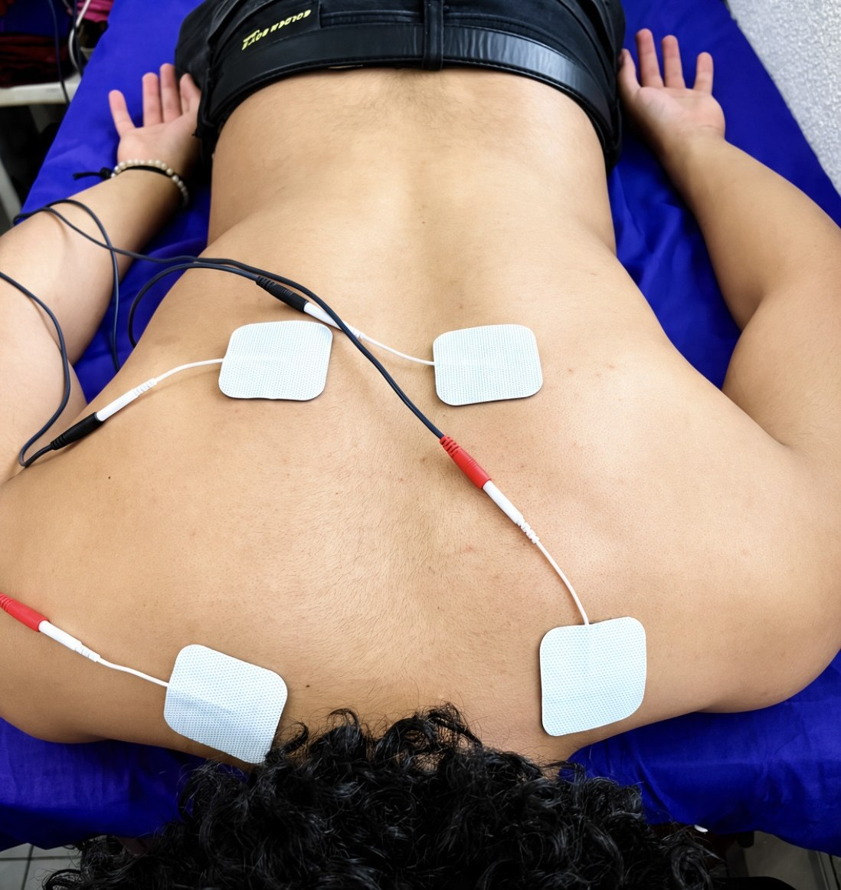
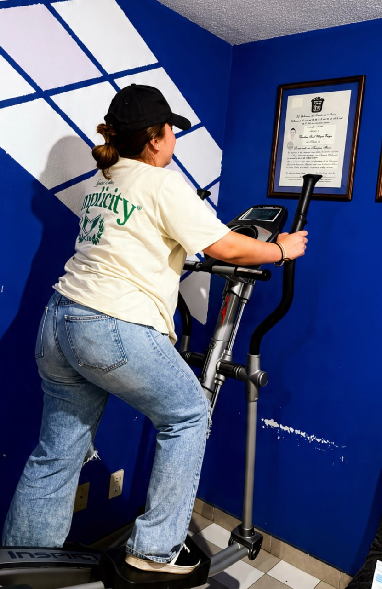
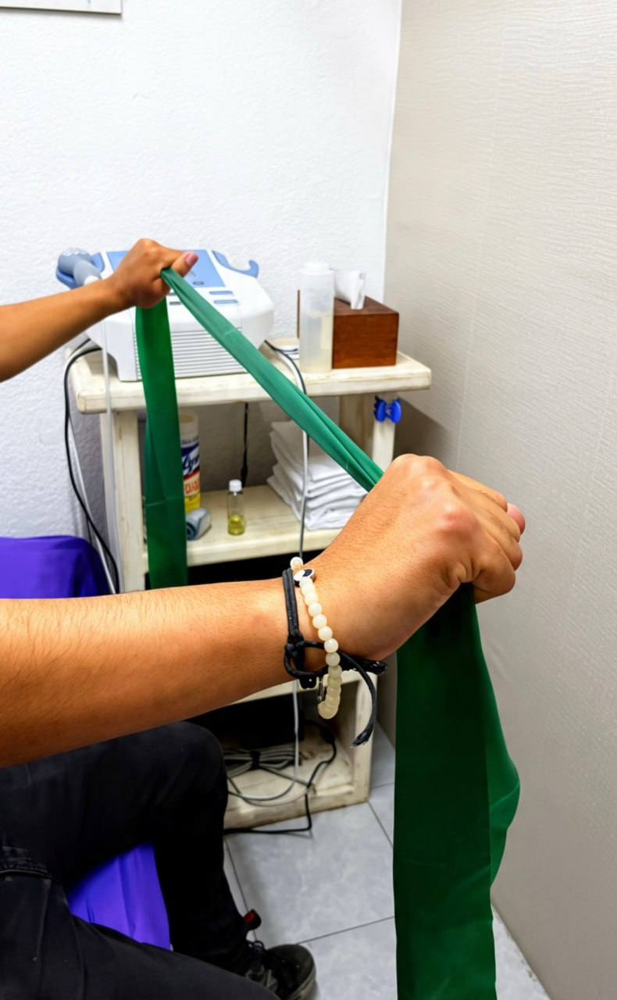
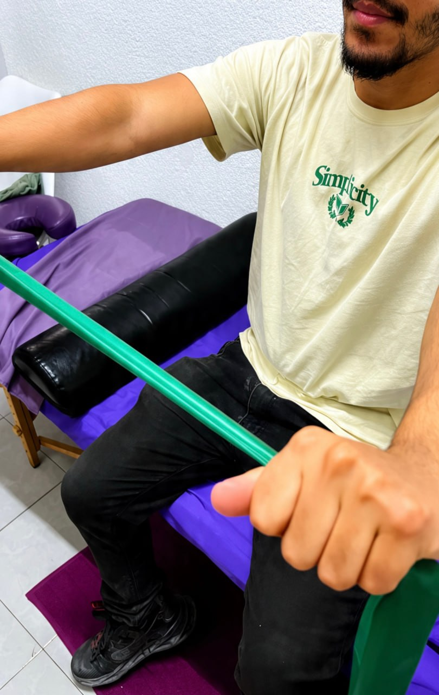

Recupera tu movimiento.
Rediseña tu bienestar.
Tratamientos médicos profesionales y ayuda terapéutica personalizada en Toluca. Diseñados científicamente con métodos y tecnologías actuales para atletas, pacientes post-quirúrgicos y personas que eligen vivir sin dolor.
Especialidades Clínicas y Rehabilitación
Enfoque estético y clínico avanzado. Damos prioridad a tu recuperación con tratamientos diseñados para restaurar tu movimiento.

Lesiones Musculoesqueléticas
Desgarros, esguinces, tendinitis, artrosis, artritis e inmovilizaciones prolongadas.

Lesiones Deportivas
Descarga muscular, epicondinitis, manguito rotador, meniscopatías y pinzamientos.

Post-Traumática
Recuperación integral tras fracturas, luxaciones y accidentes automovilísticos.

Terapia Anti-Estrés
Relajación muscular profunda, analgesia y liberación de contracturas físicas.

Cirugías
Preparación pre-operatoria y plan integral de recuperación post-quirúrgica.

Gimnasio Pasivo y Estética
Pérdida de peso, disminución de talla y estimulación neuromuscular asistida.
Galería de Espacios y Atención
Conoce nuestras instalaciones profesionales, equipos terapéuticos de vanguardia y el ambiente cálido donde transformamos tu bienestar.
Fisioterapia basada en ciencia con trato humano
No creemos en tratamientos genéricos ni en colocar corrientes eléctricas sin un análisis de fondo. Nos tomamos el tiempo de entender el origen biomecánico de tu dolor para crear soluciones y bienestar reales.
Valoración Diagnóstica Rigurosa
Evaluamos tus patrones de movimiento, rangos de movilidad articular y fuerza muscular en la primera sesión para entender el origen real del malestar.
Terapia Manual y Agentes Físicos
Combinamos terapia manual especializada con tecnología de punta (ultrasonido y electroterapia dosificada) adaptándonos al umbral de sensibilidad de tu cuerpo.
Atención y Cuidado a Domicilio
Llevamos el tratamiento de fisioterapia y los aparatos especializados directamente hasta tu hogar para facilitar el proceso de recuperación.
El Proceso de Rehabilitación
Un camino metódico y estructurado paso a paso para devolverle a tu cuerpo su máxima capacidad funcional de manera progresiva y sin riesgos.
Valoración Inicial
Análisis a fondo de tu historia clínica, sintomatología, postura y pruebas físicas específicas para identificar el origen real del padecimiento.
Diagnóstico Kinésico
Explicación biomecánica y física clara de la lesión, determinando las limitantes de movimiento y estableciendo objetivos de recuperación reales.
Plan de Tratamiento
Dosificación personalizada de terapia manual, electroterapia y ejercicios específicos que se adaptan a la velocidad de respuesta de tu cuerpo.
Terapia y Ejercicio Activo
Sesiones dinámicas de trabajo conjunto. Controlamos el dolor y la inflamación en etapas tempranas y fortalecemos estructuras en la fase activa.
Seguimiento y Alta
Al lograr tus metas de movimiento, te proporcionamos pautas específicas de autocuidado y ejercicio en casa para prevenir recaídas futuras.
Historias Reales de Movimiento y Bienestar
La mejor medida de nuestra efectividad es la calidad de vida que ayudamos a recuperar. Estos son los testimonios de personas reales en Toluca.
"Mi hija se lastimó la muñeca en un entrenamiento de tocho y por cuestiones de trabajo no la pude llevar al consultorio. La Dra. Caro Villegas la atendió a domicilio, llevó los aparatos necesarios y la recuperó rapidísimo. Su atención es impecable."
"Excelente atención y resultados inmediatos. Soy corredor de largas distancias (maratones y ultra-maratones) en asfalto y montaña. Su terapia de descarga muscular y prevención me ha ayudado muchísimo a conseguir mis metas y mantenerme libre de lesiones."
"A partir de mi embarazo tuve varias lesiones lumbares que se extendieron a rodillas, tobillos y pies. Asistir a la clínica de la Dra. Carolina ha mejorado drásticamente mi calidad de vida a través de un tratamiento integral que se adapta a mi rol de mamá."
Preguntas Frecuentes
Resolvemos tus principales dudas acerca del costo de nuestras terapias, duración y dinámicas de recuperación.
¿Cuál es el costo de cada sesión de fisioterapia?
Las sesiones presenciales en consultorio tienen un costo de $600.00 MXN por sesión de 50 minutos. Se aceptan diferentes métodos de pago.
¿Cuánto dura cada sesión de rehabilitación?
Cada sesión terapéutica tiene una duración aproximada de 50 minutos de atención individual y personalizada.
¿Cuántas sesiones necesito para recuperarme por completo?
Cada paciente es diferente por lo que el tratamiento es totalmente personalizado. No es posible estimar el número exacto de sesiones necesarias a priori, ya que depende de factores como la cronicidad, severidad de la lesión y la frecuencia de asistencia a las terapias.
¿Cómo sé si esta terapia me ayudará con mi padecimiento específico?
En tu primera cita realizamos una valoración clínica y biomecánica completa. Esto nos permite determinar si tu condición responde a los tratamientos de fisioterapia que ofrecemos. En caso de requerir un abordaje médico alternativo, te canalizaremos con el médico especialista adecuado.
¿Es necesario programar una cita o puedo asistir directamente?
Sí, es indispensable agendar previamente. Esto nos permite respetar el tiempo exacto asignado a cada paciente, evitar tiempos de espera innecesarios y estudiar la historia clínica correspondiente con anticipación para asegurar la calidad de la terapia.
Agenda hoy tu valoración
Comunícate por teléfono o WhatsApp para apartar tu espacio. También puedes enviarnos tus datos en el formulario y te contactaremos a la brevedad.
Línea Telefónica
722 571 4265Correo Electrónico
contacto@fisioterapiaentoluca.comHorario de Consultas
Lunes a Viernes: 9:00 – 19:30
Sábados: 10:00 – 13:00
Contáctanos por WhatsApp
Haz clic en el botón y envíanos un mensaje para agendar tu valoración.
Agendar por WhatsApp